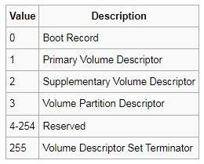

В этом разделе мы будем рассматривать загрузку ОС в 16-битном режиме real mode.
За основу данной статьи взят материал из сайта MikeOS How to write a simple operating system. Как написано у него в исходном коде, его boot sector написан на основе кода на github Код Boot Sector
Так же следует почитать документ Writing a Simple Operation System - from Scratch.
Загрузить архив с примером ОС.
После загрузки и распаковки архива с примерами вы увидите папки myos1_nasm, myos2_nasm, myos3_nasm, myos1_emu8086, myos1_masm611_com. В каждой из этих папок есть файл BAT, если вы его запустите он создаст образ img/iso который можно загрузить в программе VirtualBox. Предварительно в файле *.bat необходимо указать свой путь к этой папаке с программами в переменной окружения SET PATH. В папке imdisk_exe находится программа imdisk ее необходимо установить для корректного создания образов iso нашей операционной системы.
Что делает файл build_img.bat из папки myos1_nasm (в этом примере загрузчик boot.bin не загружает с диска ядро):
Что делает файл build_img.bat из папки myos2_nasm (в этом примере загрузчик для флоппи диска boot.bin загружает с диска ядро kernel.bin):
Что делает файл build_iso.bat из папки myos3_nasm (в этом примере загрузчик для CD ROM boot.bin загружает с диска ядро kernel.bin):
Для построения iso образа ОС из папки myos1_emu8086 вам необходимо установить эмулятор emu8086, этот пример повторяет пример из папки myos1 только при помощи эмулятора emu8086 мы будет компилировать наш загрузочный сектор boot.asm. Как это сделать:
Пример из папки myos1_masm611_com1 использует компилятор MASM 6.11, строит COM файл размером 512 байт, и записывает этот COM файл как загрузочный сектор на iso образ.
Пример из папки myos1_masm611_com2 использует компилятор MASM 6.11, строит COM файл размером 512 байт, и записывает этот COM файл как загрузочный сектор на iso образ. Здесь другое построение кода boot.asm.
Как видно в примере myos2 мы в начале asm файла загрузчика myfirst.asm оформляем так называемый BIOS Parameter Block (BPB). В примере myos1 мы ничего не читали с диска, поэтому пример myos1 прекрасно функционировал и без BIOS Parameter Block. Но, в примере myos2 мы пользуемся прерыванием BIOS 13h для чтения с диска kernel.bin ядра нашей ОС, поэтому BIOS должен знать параметры диска, а точнее для вызова прерывания чтения с диска 13h BIOS должен знать параметры диска. Для флоппи диска своя таблица BPB, для жесткого диска другая таблица BPB, то есть BPB для флоппи и жесткого диска отличаются. Так же BPB отличаются в зависимости какой диск у вас в компьютере - например BPB требует количество секторов на диске, разные диски имеют разное количество секторов, поэтому BPB разные.
В примере myos1 рассматриваеться загрузчик из трехдюймовой дискеты, но он подойдет что бы сделать образ ISO и загрузиться как CD диск в программе VirtualBox. Так же испольузя образ ISO моей ОС я сделал загрузочный флеш диск, и ОС отлично грузиться с флеш диска, выдает сообщение Kernel loaded! как и должно быть.
Почему для чтения дискеты и HDD используется Bios Parameter Block а для чтения CD ROM не требуется? Дискеты бывают разные 360KB, 720KB, 1440KB и так далее, HDD диски тоже бывают разные. У каждой из этих дискет и HDD расположнение FAT разное, расположение корневого каталога разное, расположение данных пользователя разное. То есть BIOS высчитывает эти данные используя Bios Parametr Block и получает доступ к данным. А когда BIOS определило что это CD ROM диск - то BIOS наперед знает как его читать, размер сектора стандарный для ISO 9660 2048 байт, и где искать данные тоже известно - CD ROM диски и ISO 9660 для всех CD ROM однотипная. Поэтому Bios Parameter Block для чтения CD ROM не используется. А у флоппи дисков и HDD дисков бывает различное количество головок, FAT, секторов на FAT, общее количество секторов и т.д. Эти все параметры BIOS использует для вычисления сектора начала FAT, корневого каталога, данных пользователя для флоппи и HDD.
Почему мы должны в коде загрузочного сектора писать код который вычисляет начало FAT, начало корневого каталога диска, начало области данных, почему нельзя просто написать- читать корневой каталог 1 сектор начиная с 19 логического сектора. Потому что этот код загрузочного сектора ложится в нулевой сектор дисков с разными параметрами, и в зависимости от содержимого Bios Parameter Block вычисляется начало FAT, начало корневого каталога диска, начало области данных - т.е. загрузочный сектор обладает универсальностью, его можно положить на диски с разными параметрами, только поменять значения в Bios Parameter Block. Так операционные системы переносятся с диска на диск. Сначала программа для переноса ОС (например SYS в MS-DOS) читает загрузочный сектор в память. Потом запрашивает у BIOS параметры диска (функция ah=8 int 13h) на который переносится ОС. Эти параметры диска программа записывает в Bios Parameter Block того загрузочного сектора который считала в память. Потом из памяти с новыми параметрами загрузчный сектор записывается на диск.
Как происходит загрузка компьютера подробно можно почитать Википедия - Начальная загрузка компьютера.
После включения компьютера, микропроцессор начинает работать в 16ти битном режиме который называется режим реальной адресации. Как происходит адресация. Например у нас есть память компьютера от 0 ячейки памяти и до последней. Одна ячейка памяти хранит один байт. Начиная от 0й ячейки памяти через каждые 16 байт адресов начинается новый сегмент 64 Килобайта. То есть сегмент начинается по адресу 0:0, далее сегмент начинается по адресу 0:16 (через 16 ячеек памяти), следующий сегмент начинается по адресу 0:32 (через 16 ячеек памяти) и т.д. Каждый сегмент может быть не более 64 Килобайта, потому что регистры процессора 16 битные. 16 битное число максимум может иметь значение 65535. В режиме реальной адресации все достпуное пространство памяти которое может адресовать процессор это 1 Мегабайт. И это пространство разделено на сегменты 64 Килобата. Как уже говорилось адрес сегмента кратен 16. Например у нас есть абсолютный адрес 0h:0700h, тогда в сегментный регистр нужно записать значение в 16 раз меньшее, т.е к примеру 70h:0000. Этот адрес 70h:0000 (сегмент:смещение) эквивалентен адресу 0h:0700h. К примеру в регистре DS у нас храниться значение 70h. Далее процессор для адресации сегмента данных программы берет это значение из DS и внутри себя умножает на 16, получается 700h - это значение процессор и выдает на адресную линию. Таким образом за счет сегментации и того что внутри себя процессор умножает значение сегмента на 16 можно адресовать до 1 Мегабайта памяти. Т.е. 16 битные регистры хранят число, не более 65535, но внутри процессора это число (адрес сегмента) умножается на 16, и значение выдается на 20ти разрядную адресную линию. Т.е. 16 разрядов это FFFF в 16-ричной системе счисления. 20 разрядов это FFFFF в 16- ричной системе счисления, если FFFF умножить на 10 то поулчим FFFF0 - двадцатиразрядное число. В ассемблере сегментные регистры адресуются именно так - берется абсолютный адрес - 700h и делится на 16, получаем 70h что и запишем в сегментный регистр.
К примеру микропроцессор 8086 имеет 16 разрядов шину данных, и 20 разрядов шину адреса. Процессор 8086 называют 16 разрядным процессором. Поскольку шина данных подключена к регистрам миропроцессора, то когда говорят 16-ти разрядный микропроцессор имеется ввиду разрядность его регистров (AX, BX, CX и т.д.).
Так же есть защищенный режим работы процессора, 32х битный режим. В этом режиме процессы защищены друг от друга. Например есть процесс уровня ядра, который может получить доступ к процессу уровня пользователя, но процесс уровня пользователя не может получить доступ к процессу уровня ядра - на этом построена защита. Есть специальные инструкция процессора lgdt и регистр cr0 для перехода в защищенный режим.
Как происходит загрузка компьютера - коротко. Первое- вы в BIOS выбрали диски для загрузки, например CDROM/C/A. Включили компьютер. После тестирования по включению, BIOS обращается на нулевой сектор диска (первый который у вас выбран в качестве загрузочного например CDROM), читает этот сектор размером 512 байт и ищет в этих 512 байтах сигнатуру загрузочного сектора 0xAA55, если не находит сигнатуру, BIOS обращается на нулевой сектор следующего загрузочного диска, т.е. это будет C загружает нулевой сектор этого диска и если находит в нем сигнатуру загрузочного диска 0xAA55 - загрузает этот сектор 512 байт в оперативную память по адресу 07c0h. Сам номер диска с которого происходит загрузка храниться в регистре процессора DL. Во время загрузки процессор находиться в 16 битовом реальном режиме адресации real mode, (для информации) бывает еще защищенный режим 32 бит protected mode. Загручик должен быть не больше 512 байт, и помещен в 0й сектор загрузочного диска. На ассемблере (папка myos1) мы напишем загрузочный сектор, который загрузиться в память и просто выведет сообщение на экран:
Мы с вами в примерах рассмотрели загрузку из флоппи диска и CD ROM диска. Загрузка из HDD происходит несколько иначе. Сначала BIOS загружает по адресу 7C00h сектор 1 с диска который установлен загрузочным в BIOS. Далее BIOS передает управление на этот адрес 7C00h. Загрузчик ищет в своем коде смещение 446 байт - там находится таблица разделов диска. В таблице разделов загрузчик ищет первый активный раздел, загружает с него первый сектор, код в этом секторе загружает ОС. Если в таблице разделов несколько активных разделов, программа загрузчик выдает сообщение пользователю (из какого раздела загружаться) какую ОС выбирать для загрузки. Пользователь выбирает ОС для загрузки, загрузчик читает 1й сектор из выбранного активного раздела, передает ему управление, и загрузчик из активного раздела загружает ОС.
Можете почитать Википедию Главная загрузочная запись MBR
This is my cool new OS!
Первый пример ничего с диска не загружает. У нас есть только один bootsector в 0м секторе диска, который выводит сообщение на экран. Во втором примере (папка myos2) мы напишем загрузочный сектор, который загрузит с диска ядро- файл kernel.bin, и это так называемое ядро нашей ОС выведет текстовое сообщение на экран:
Kernel loaded!
Вы можете расширить функциионал файла kernel.bin написав свои возоможности ОС на ассемблере.
Для начала скопируйте ниже текст на ассемблере и сохраните в файле myfirst.asm.
BITS 16 start: mov ax, 07C0h ; Set up 4K stack space after this bootloader add ax, 288 ; (4096 + 512) / 16 bytes per paragraph mov ss, ax mov sp, 4096 mov ax, 07C0h ; Set data segment to where we're loaded mov ds, ax mov si, text_string ; Put string position into SI call print_string ; Call our string-printing routine jmp $ ; Jump here - infinite loop! text_string db 'This is my cool new OS!', 13, 10, 0 print_string: ; Routine: output string in SI to screen mov ah, 0Eh ; int 10h 'print char' function .repeat: lodsb ; Get character from string cmp al, 0 je .done ; If char is zero, end of string int 10h ; Otherwise, print it jmp .repeat .done: ret times 510-($-$$) db 0 ; Pad remainder of boot sector with 0s dw 0xAA55 ; The standard PC boot signature
Дальше файл нужно откомпилировать при помощи nasm.exe. Пример лежит в папке myos1. После того как был создан файл myfirst.bin после компиляции nasm.exe, далее при помощи утилиты dd мы сделаем загрузочный образ myfirst.img. Далее из этого загрузочного образа floppy диска, мы при помощи утилиты CDIMAGE.exe делаем ISO файл. После того как мы создали ISO файл, нам нужен VirtualBox запустить нашу ОС- указываете путь CD привода VirtualBox к нашему файлу myfirst.iso. Покаместь у нашей ОС есть только bootsector, никаких файлов она не загружает с диска, а для создания образа ISO программе CDIMAGE.exe нужна папка с файлами рамещенными в образе- поэтому для вида положите в папку dir файл kernel.bin, и укажите в программе CDIMAGE.exe папку Source folder как dir.
В папке myos1 и myos2 лежит файл buildwin.bat который компилирует myfirst.asm и делает bin а потом img файл, и ISO файл.
И наконец в папке myos3 лежит полноценный загрузчик CD дисков, я писал этот bootloader используя bootloader NetBSD файл под названием cdboot.S. Теперь вы знаете процедуру загрузки, вполне можете разобраться как происходит загрузка с CD диска. Используйте файл buildwin.bat что бы создать ISO образ.
Способ создания ISO который описан на сайте MikeOS не подошел в моем случае, образ ISO оказался не рабочий, и я читал так же информацию об этом в Интернете, поэтому программа CDIMAGE.exe может сделать образ ISO из файлов IMG или FLP. Что бы понять работу примера из папки myos2, необходимо знать как устроена FAT, файловая система. Суть примера из папки myos2 лежит в том, что сначала код myfirst.asm получает от BIOS номер диска с которого можно загрузиться- он лежит в регистре dl. Потом, вычисляеться где на диске лежит корневой каталог- вычисляеться сектор начала корневого каталога- а корневой каталог лежит после двух копий FAT и bootsector. Далее с диска читаеться этот корневой каталог. В нем ищеться файл kernel.bin – ядро ОС. Когда файл наден в корневом каталоге, (максимум динна имени 11 символов) рядом с именем в элементе данных корневого каталога лежит номер первой записи (кластера) в FAT (FAT организован как обычный массив), с этой записи FAT начинаеться нумерация секторов файла в FAT. То есть из элемента корневного каталога мы получаем номер элемента в FAT- этот элемент в FAT содержит номер первого сектора файла на диске в области данных, и следующие за ним остальные номера секторов файла в области данных диска. Конец файла в FAT обозначен как 0xFFFF. Мы знаем номер первого сектора файла из FAT, читаем FAT, из FAT получаем информацию о остальных секторах на диске которые занимает kernel.bin и читаем kernel.bin в память с диска и передаем управление нашему ядру (т.е. файлу kernel.bin) делая на ассемблере jmp на адрес где загружено в памяти ядро. Ядро kernel.bin просто выводит тестовое сообщение на экран Kernel loaded!
Для работы с примером, после того как был запущен файл buildwin.bat из папки myos2 мы получаем IMG файл в котором уже содержатится bootsector и файл kernel.bin. То есть файл kernel.bin не надо ложить в папку dir для CDIMAGE.exe специально что бы загрузка работала, можно в папку dir положить любой другой файл.
Ниже на рисунке показано как устроена FAT12, для общего сведения FAT12 и FAT16 имею одинаковое устроство, разница только в том что FAT12 размер элемента имеет 12 бит, а FAT16 имеет размер элемента 16 бит, что позволяет адресовать диски большего объема.
К примеру корневой каталог диска содержит файлы A,B,C. Рисунок ниже показыват как найти секторы файлов в FAT.
Как по данному рисунку найти секторы файлов в FAT? Например файл А имеет первый кластер 5 (как записано в корневой директории). Смотрим по таблице FAT на рисунке, 5й кластер указывает на 6й. Смотрим 6й кластер указывает на 7й. 7й кластер указыает на 8й. 8й кластер указывает на 13й. 13й указывает на 14й. А 14й кластер это конец файла. Один кластер в FAT12 занимает 12 бит. То есть это 1,5 байта, получается 3 байта это 2 кластера FAT12.
Почему в коде примера myos2_nasm при расчёте начала корневого каталога данные пользователя начинаются с сектора 33 а для расчета кластера из фат пользовательские данные начинаются с сектора 31?
Разница в начальных секторах пользовательских данных (33 vs 31) в загрузчике MikeOS
В коде действительно есть кажущееся противоречие, где пользовательские данные упоминаются как начинающиеся с:
Это не ошибка, а важная особенность FAT12. Давайте разберёмся детально:
1. Структура FAT12 на дискете 1.44MB
| Область | Сектора | Логич. сектор | |----------------------------|---------|--------------| | Загрузочный сектор | 1 | 0 | | FAT1 (первая копия) | 9 | 1-9 | | FAT2 (вторая копия) | 9 | 10-18 | | Корневой каталог | 14 | 19-32 | | **Пользовательские данные** | 2848 | **33-2879** |
2. Почему сектор 33?
В комментарии к коду:
; Start of user data = (start of root) + (number of root) = logical 33
3. Почему сектор 31 при загрузке кластеров?
В коде загрузки файла:
add ax, 31 ; Cluster start = (cluster number) + 31
Это связано с особенностью нумерации кластеров в FAT12:
Пример расчёта
Для загрузки кластера 2 (первый реальный кластер данных):
2 + 31 = 33 (что корректно)
Для кластера 3:
3 + 31 = 34 (следующий сектор данных)
4. Почему такая разница?
Визуализация
Логич. сектор 0: [Загрузчик] Сектора 1-18: [FAT1+FAT2] Сектора 19-32: [Корневой каталог] Сектор 33: Кластер 2 — первый сектор данных Сектор 34: Кластер 3
6. Почему не возникает ошибки?
Вывод
Оба значения верны:
Это не противоречие, а два разных уровня абстракции при работе с файловой системой.
Структура флоппи диска показана на рисунке ниже.

Характеристики дискеты 1440 KB:
Общий размер в байтах: кол-во сторон * кол-во дорожек * кол-во секторов в дорожке * байт в секторе.
Пример = 2 * 80 * 18 * 512 = 1474560 байт.
Общий размер в Кб: (кол-во сторон * кол-во дорожек * кол-во секторов в дорожке * байт в секторе)/1024.
Пример = (2 * 80 * 18 * 512)/1024 = 1474560/1024 = 1440Кб.
Общий размер в Мб: ((кол-во сторон * кол-во дорожек * кол-во секторов в дорожке * байт в секторе)/1024)/1024
Пример = ((2 * 80 * 18 * 512)/1024)/1024 = (1474560/1024)/1024 = 1440/1024 = 1.4Мб
Дискета 360 KB содержит 2 стороны (2 головки верхняя и нижняя), 40 дрожек на каждой стороне, на каждой дорожке 9 секторов, каждый сектор 512 байт.
Дискета 720 KB содержит 2 стороны (2 головки верхняя и нижняя), 80 дрожек на каждой стороне, на каждой дорожке 9 секторов, каждый сектор 512 байт.
Дискета 1440 KB содержит 2 стороны (2 головки верхняя и нижняя), 80 дрожек на каждой стороне, на каждой дорожке 18 секторов, каждый сектор 512 байт.
Сначала для чтения дисков было прерывание 13h функция 2h - чтение/запись с дисков. Когда диски стали большого объема, в прерывании 13h появилась новая функция 042h - чтение дисков большого объема, или другое название расширенный дисковый сервис EDD, почитать можно здесь Расширенный дисковый сервис EDD.
При чтении дисков при помощи int 13h функции 2h использвался переход от логических секторов в вид цилиндр:головка:сектор диска, при использовании int 13h функции 042h расширенного дискового сервиса используется только логические сектора, не переводятся в вид цилиндр:головка:сектор диска. Например для дискеты 1440 KB всего на дискете 2880 секторов (80 дорожек умножить на 2 стороны умножить на 18 секторов на дорожку = 2880). Это значит лоическая адресация для этой дискеты от 0 сектора до 2880.
Логические сектора нумеруются начиная с 0.
Физические сектора диска нумеруются от 1.
Дорожки (цилиндры) нумеруются от 0.
Головки (стороны) нумеруются от 0.
Один цилиндр это дорожка (трек) сверху диска и снизу диска на одном расстоянии от центра.
Для функции 2h int 13h требуется перевод из логического сектора в физический при помощи формул:
physical sector CL = start logical sector % SectorsPerTrack + 1 head DH = (start logical sector / SectorsPerTrack) % NumHeads track CH = (start logical sector / SectorsPerTrack) / NumHeads
Как расположены сектора и дорожки на диске 1440 KB - последовательно. Например мы имеем 36 логических секторов. Это выглядит так:
И так далее. Последовательность - верхий трек, нижний трек, верхний трек ближе к центру, нижний трек под ним и т.д.
Нулевой дорожкой (треком) считается самая крайняя дорожка (самая дальняя от центра) на верхней стороне диска.
Что бы пойти дальше, нужно знать язык ассемблера, доработать функционал kernel.bin, знать как загружаться с HDD диска, или сделать полноценный CD загрузчик, то есть из загрузчика нужен доступ к файловой системе HDD (она может быть FAT32, NTFS к примеру) или файловой системе CD что бы найти на диске нужные файлы и загрузить вашу ОС с диска. MikeOS в своем примере ОС показывает расширенный функционал kernel.bin, есть и редактор, и менеджер файлов и многое другое- написанное на ассемблере. Хорошая книга с примером ОС MINIX это Операционные системы - Разработка и реализация Таненбаум Э., Вудхалл А 2007, 3-е изд, 704с. Исходный код к книге по ОС MINIX можно загрузить здесь BOOK SRC.
С чего начинать изучение исходного кода, если вы загрузили исходный код операционной системы. Например вы установили linux подобную систему вместе с исходным кодом, исходный код расположен где то в /usr/src. Вам нужно перейти в эту папку и найти папку с кодом загрузчика ОС boot sector /usr/src/boot. Начинать изучать исходный код ОС нужно из исходного кода boot sector, и смотреть дальше как ОС загружается в папять и что делает. Что бы найти исходный код boot sector, в папке /usr/src/boot необходимо пересмотреть все ассемблерные файлы, если в конце ассемблерного файла есть boot signature 0xAA55 - эначит это код boot sector. Ассемблерные файлы обычно имеют расширение .S.
CD ROM диск имеет файловую систему ISO 9660. Как происходит загрузка с CD ROM.
Что такое Primary Volume Descriptor. Первичный дескриптор тома (PVD) является отправной точкой в идентификации компакт-диска, он записывается, начиная с логического сектора 16. Дескриптор первичного тома ISO 9660 описывает характеристики стандартной информации о файловой системе ISO, представленной на данном компакт-диске, детализирует содержимое и типы информации, содержащейся на диске. Например при помощи Primary Volume Descriptor можно узнать сектор где находится корневая директория диска. Любой ISO-образ должен содержать список дескрипторов томов. Каждый дескриптор занимает целый сектор (2048) байта. Дескрипторы томов размещаются начиная с 16-го сектора, если нумерация секторов осуществляется с 0.
Для чтения секторов с CD ROM есть прерывание 13h функция 42h. У 42h функции дискового прерывания ввода/вывода 13h есть расширеный блок параметров, где указывается сколько секторов читать и адрес буфера. Например:
mov ah, 42h
mov si, edd_packet
int 13h
edd_packet:
edd_len: dw 16 ;16 битный режим - размер пакета 16 байт
edd_nsecs: dw 0 ;число секторов которое читается с диска
edd_offset: dw 0 ;смещение буфера в памяти куда читаем данные
edd_segment:dw 0 ;сегмент буфера в памяти куда читаем данные
edd_lba: dq 0 ;номер сектора с которого начинается чтение
Поскольку сектора 0x00-0x0F компакт-диска зарезервированы как системная область, дескрипторы тома Volume Descriptors можно найти, начиная с сектора 0x10 (16). Формат дескрипторов тома следующий:
Это означает, что каждый дескриптор тома имеет длину в один сектор (2 Килобайта, т.е. 2048 байт).
Поле Volume Descriptor Type field определяет тип дескриптора тома. Коды Volume Descriptor Type следующие:
Когда мы загружаем компакт-диск, нас будет интересует дескриптор основного тома Primary Volume Descriptor, который указывает нам на корневой каталог и таблицы путей The Path Table, которые позволяют нам найти любой файл на компакт-диске.
Загрузочная запись — первый тип дескриптора тома это загрузочная запись.
Primary Volume Descriptor - начиная с 16 сектора диска ищем Primary Volume Descriptor, когда его нашли в этой секции нас интересует смещение 156 и размер данных 34 байта, из этой строки данных мы можем получить первый сектор на диске корневой директории:
Volume Descriptor Set Terminator - если мы прочитали Volume Descriptor (дескриптор тома, первый начинается с сектора 16, размер 2 Килобайта, это 1 сектор) один за другим начиная с 16 сектора, и в первом байте встретили 255 - это обозначает конец таблицы Volume Descriptors. Если в первом байте 1 - это Primary Volume Descriptor.
Как найти Primary Volume Descriptor - к примеру мы по смещению bx прочитали в память 1 сектор с диска начиная с 16 сектора. Если [bx] = 1 это будет сектор Primary Volume Descriptor, т.е. первый первый бит из адреса буфера долежен быть равным 1. В коде у нас это выглядит так:
;регистр bx содержит начало на 1 прочитанный сектор начиная с 16 го сектора диска cmp byte [bx], 1 ;Is it Primary Volume Descriptor? jz pvd_found
Итак, мы прочитали 1 сектор диска начиная с 16 сектора, к примеру первый бит данных в этом секторе обозначает что это Primary Volume Descriptor. К началу данных этого буфера добавляем смещение 156 байтов получаем описатель корневой директории длинна данных 34 байта. К смещению 156 добавялем 2 байта - это будет первый сектор на диске корневой директории, размер который занимает номер сектора 8 байт. К смещению 156 добавляем 10 байт - это будет длинна данных в которые занимает корневая директория. Если каталог занимает несколько секторов - записи каталога не могут пересекать границу сектора (в отличии от таблицы путей). Длинна данных которые хранит каталог записана в байтах, значение нужно перевести в секторы следующим образом:
mov bx, buffer + 156 ;offset in PVD 156 is Directory record for Root Directory mov eax, [bx + 2] ;LBA of the root directory - start sector mov edx, [bx + 10] ;data length add edx, 2047 ;Convert data length to shr edx, 11 ;... number of sectors ... mov dh, dl ;... and load it to dh
Например мы размер каталога получили в байтах, теперь добавим 2047 (2048 - это размер одного сектора файловой системы ISO 9660) и поделим на 2048 (тот же размер сектора), деление происходит путем сдвига shr на 11 байт, что равносильно делению на 2048 - мы получим размер данных в виде количества секторов которые данные занимают на диске.
Файл на диске можно найти при помощи The Path Table - таблица путей, или при помощи корневого каталога. В нашем коде мы используем корневой каталог.
Рекурсия из корневого каталога - поиск файлов при помощи корневого каталога. Вы можете игнорировать таблицу путей и просто кэшировать корневой каталог из основного дескриптора тома Primary Volume Descriptor. Затем вы загружаете каждый каталог по очереди. Например, для пути «/BOOT/MYLOADER/STAGE2.BIN»
К примеру адрес начала буфера считанной с диска корневой директории хранится в регистре bx.
mov si, bx ;buffer directory address bx add si, 33 ;offset for filename 33 mov cl, [bx + 32] ;length of filename kernel.bin offset 32
Тогда по смещению bx + 0 будет храниться размер этой текущей записи, bx + 32 будет храниться длинна имени файла (сл. каталога), bx + 33 будет начало самого имени файла (каталога). bx + 2 будет первый сектор на диске по которому расположен файл (каталог). bx + 10 будет размер этого файла (каталога). То есть одна запись каталога состоит из таких смещений:
[bx + 0] - длинна этой записи каталога (1 байт) [bx + 2] - первый сектор на диске с которого расположен файл (32 бита) [bx + 10] - размер этого файла (32 бита) [bx + 32] - длинна имени файла (1 байт) [bx + 33] - начало на строку с именем файла (строка) [bx + 25] - флаги файла (1 байт)
Флаги файла занимают 1 байт. Если в этом байте 2й бит (т.е. двоичное 10) установлен, то эта запись описывает каталог (т.е. эта запись относится к подкаталогу).
Более подробно о файлово системе ISO 9660 можно почитать здесь https://wiki.osdev.org/ISO_9660
То есть поиск файла на диске выглядит так: